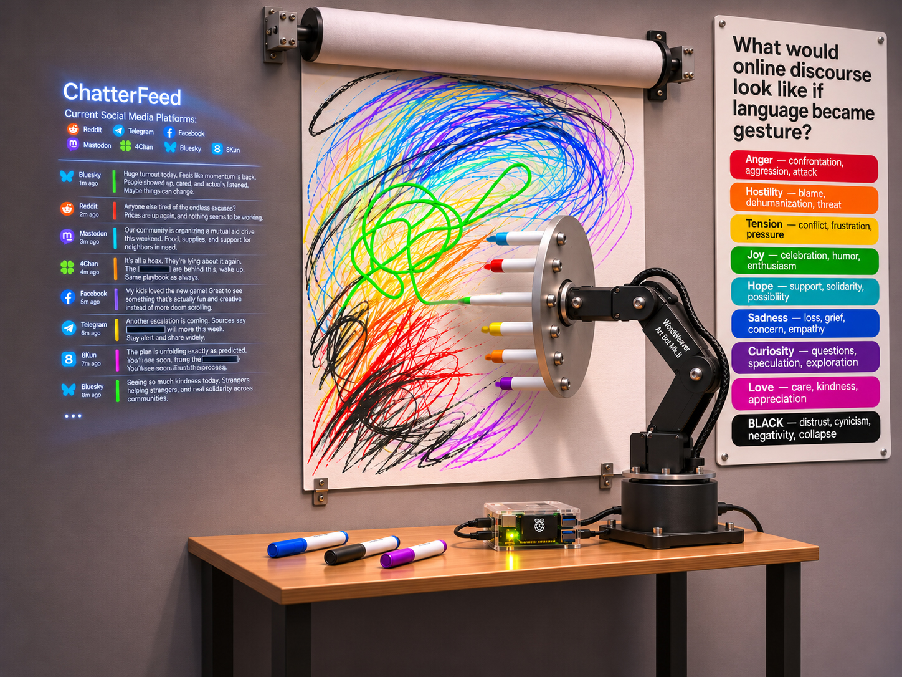

<DOOMSCROLLER>
What does online discourse look like in gestural form?

Robotic drawing installation
Robotic arm, Raspberry Pi, custom software, AI language interpretation, colored markers, paper
Dimensions variable
In development; exhibition venue to be announced
1. What am I trying to communicate?
Words on the internet can seem temporary or inconsequential, but the way we speak to one another has real emotional weight. DOOMSCROLLER explores what happens when online language takes on a physical presence.
The project turns public online conversations into marks made by a robotic arm. Over time, those individual gestures accumulate into a drawing that reflects many kinds of human expression: hostility, humor, sadness, uncertainty, kindness, and hope.
It is not an attempt to judge the people writing the posts. It is an interpretation of the language moving through a public space.
2. How does it work?
Software samples public conversations from Mastodon, Bluesky, 4chan, and 8kun. An AI interpreter analyzes selected posts for qualities such as aggression, warmth, sadness, and intensity.
These interpretations determine which of eight colored markers the robot will use. For example, sadness and vulnerability are represented by blue; hostility by red. The aim is for the character of the robot's movement to respond to the language as well.
The drawings develop gradually, one gesture at a time. The robot's drawing behaviors are still being developed.
3. Who is the artist?
Dana Muise is an artist and technical artist based in the San Francisco Bay Area. He studied photography at the Rhode Island School of Design and has worked with animation, interactive media, and real-time graphics for many years.
DOOMSCROLLER brings together his interests in visual art, software, robotics, and the ways people communicate.
4. Technical aspects and privacy
DOOMSCROLLER is being developed in Python for a Raspberry Pi 4, with a Waveshare RoArm-M2-S robotic arm and an eight-marker carousel. AI interpretation is handled by an online service; the Pi will coordinate the display and drawing hardware.
The project samples publicly accessible text and does not seek to identify or profile its authors. Posts are displayed without usernames, and offensive language is redacted before appearing in the feed. The software does not intentionally maintain a permanent archive of the sampled conversations.
This is a non-commercial artwork in development, intended for temporary exhibition.
5. The Installation
DOOMSCROLLER is intended to operate continuously within an exhibition space. A screen presents a changing stream of public online conversations while a robotic arm translates selected messages into marks on paper.
The work unfolds gradually. Visitors can observe the relationship between the language appearing on the screen and the physical gestures produced by the machine. Individual marks accumulate over time, eventually forming a drawing shaped by conversations taking place elsewhere.
The installation does not require audience participation. Its activity continues whether or not anyone is watching.